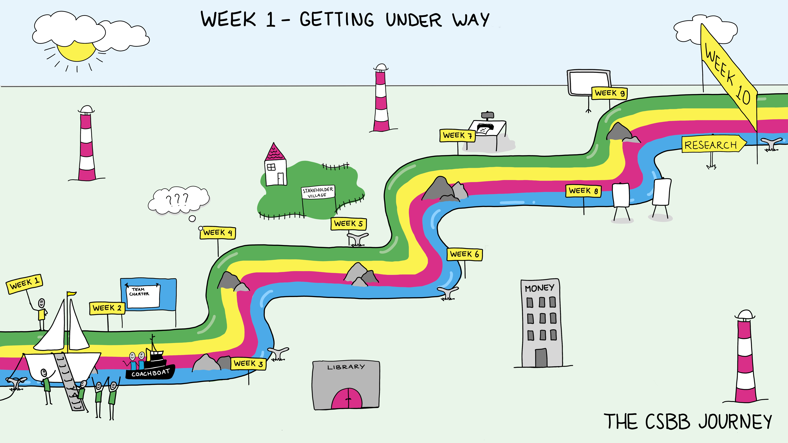

Week 1: Getting Underway#
Week 1 is meant for the students to get to know each other and the topics they will be working on. They will get to know their group, the supervisors and the first tools they will need during the minor. It will include picking a team name and picking a subtopic.
Schedule#
The schedule for the introduction week is quite full and complex. It includes:
Monday: Communication
Introduction lecture where the structure of the minor, goals and assessments will be introduced.
Technical Tools - explanation and exploration of all the tools we will be using: textbook, Brightspace, Teams.
Library searches. Citation management tool.
Get to know each other a bit better.
Tuesday: Research
Presentation of subtopics: short presentations by supervisors about potential areas to do projects in.
Group roles: understanding Belbin framework of group roles.
(teaching team makes student groups)
Wednesday: Collaboration
Students are informed of their group assignment
Group free time to discuss name and topics, do a little reading of background materials.
Thursday: Reflection
Keep on reading and understanding background of subtopics.
Submit team name.
Friday: Integration
Topic selection
Submit first writing assignment
First Friday symposium—reflect on the week.
Intro Lecture by minor Director#
Overview#
The minor Director will welcome you during this Monday morning session. He will introduce you the minor, the transdisciplinary side of it, what we want to achieve, structure and schedule, contact details etc.
Key concepts#
If you think about this as preparing for a sailing voyage, this is laying out the map of where you’ll go, your destination, and what you might learn along the way.
Information they should know#
What systems are being used
Who’s involved
Where to go to get help
Deadlines and assignments
Workshop Technical Tools#
Overview#
Go over all the systems we will be using during the minor. The textbook, Brightspace, and teams. Show a basic literature search and citation management
Key concepts#
Understanding the tools that will be used. Like a sailor preparing for a voyage, it’s essential to have your tools ready and know how to use them and where things are. If the Intro lecture is about where you’re going, this is the technical tools you’ll need.
Relevant learning goals#
2.a. Collaborate. Collaborate effectively with other group members, other groups and the experts in the field.
3.a. Research. Develop a research strategy to learn a body of information.
Presentations of subtopics#
The core of this minor is doing a research project. Within a large umbrella topic, students will be offered subtopics to choose to focus on. These are broad questions where groups will need to work on understanding the area to develop a specific actionable research question.
Supervisors, experts, and stakeholders suggest topics (more than there are groups and present these in short pitch presentations.
Each representative of a subtopic will give a brief 7/8-minute talk on the subtopic, what is interesting, what is the status of the field, and what some questions in the area are. When the presentations are over, they will be available so students can ask questions.
Each subtopic will have a half-page summary and 2-3 articles as suggested beginning reading. These will be available in Brightspace.
Students will decide with their group which subtopic they want to claim. Students will work in teams of four to five students. Each team will focus on a subtopic: the goal of the teams will be to understand the subtopic, investigate different aspects of it, identify the stakeholders involved and create a research question and then proposal to investigate it.
Workshop Team Dynamics and Belbin roles#
Team dynamics can make or break a project. Every team member has their own goals, interests, backgrounds, skills and knowledge sets. The collaboration of such diverse groups often causes friction, tensions and conflicts. To help your team succeed, we’ll give you some essential tools for examining perspectives and handling conflicts. To support your teamwork, we will focus on various aspects of teamwork and collaboration during the whole minor.
We first introduce the different roles people like to take in collaborative teams. In this minor, we will use Belbin Team Roles. Students will have done the Belbin test ahead of time. This afternoon will be spent talking about group roles (Belbin), perspective (Core Quadrants) and Rose of Leary (‘Conflict’).
Workshop Peer feedback, teamwork, and collaboration#
Overview#
In the morning, the teams will be announced, and the students will have time to get to know each other by playing competitive and collaborative board games related to medicine and nanobiology. During the first part of the workshop, we will dive further into the topic of teamwork and collaboration and discuss the student’s experiences with the various games. We will discuss the essentials of effective collaboration and the role of competition in teamwork. In the afternoon, we will focus on communication between team members, especially on peer feedback.
Key concepts#
First, the teams experience collaboration and competition while playing various board games within their new teams. This serves two goals: team bonding (having fun and getting to know each other) and experiencing collaboration and competition. Then we dive into the basics of teamwork. We discuss the following topics: What is teamwork? To what extent it is different from individual work? What are the pros and cons of working together? How do we make teamwork effective? And finally, what is the relationship between collaboration and competition?
We will also discuss different types of teamwork and the management of tasks within a team. Finally, we will focus on giving and getting feedback from your team members: peer feedback.
Getting and giving feedback are important skills for any profession—or person. If we want to improve our skills (ourselves), we need people to give us feedback about how we are doing. But how the feedback is given is as important if not more important than what it is regarding how effective it is at creating change. The other side of that is that sometimes (often), we want feedback from other people about something we are trying to improve—how we ask for that feedback can have a huge effect on the kind of feedback they give us. Asking for and receiving feedback are skills; they need practice and ongoing refinement.
Giving feedback to each other is the core of teamwork: letting people know what you can and cannot do, what works for you, and what does not. Developing reflection and good habits in feedback early on can save many conflicts, time, and energy wasted later on – especially feedback around making mistakes.
Relevant learning goals#
Collaboration is one of the four main threads of this minor and peer feedback is key to that.
A) Collaborate effectively with other group members, other groups, and the case owners / experts of the field.
B) Explain how intercultural differences play a role in collaboration—this includes social (language, nationality, etc.) but also professional (business vs education, medicine vs engineering) differences and apply this knowledge to the collaboration.
C) Be aware of and reflect on the various phases of the process, the challenges and problems that were encountered, and what was learned from this.
D) Evaluate different roles of members in group projects.
E) Provide constructive feedback and show openness to feedback from others.
Workshop Reflective Science#
Overview#
During this workshop, students will dive deeper into what assets each individual student brings to the team. We address what prior knowledge and skills students have that could be relevant to the team project. Further, we will reflect on how students prefer to work and communicate with each other. We will use a culture map to identify cultural and personal differences in communication and teamwork, aiming to understand how the individual team members can collaborate effectively.
Key concepts#
Working effectively in a team requires good understanding of what knowledge and skills are required for the project that is undertaken, but also good understanding of cultural (being e.g. field of expertise, social-economic background, or country of origin) and personal preferences of oneself and of all the team members. In this workshop, students will identify what skills and knowledge might be needed to start the project and if the required skills and knowledge are already present in the team. In addition, students will work on identifying and discussing their personal and cultural preferences regarding teamwork and communication. Analysing how cultural habits position themselves relative to another culture, a deeper understanding of how culture influences collaboration is provided (further information can be found in The Culture Map, Erin Meyer, ISBN: 9781610392761).
Relevant learning goals#
4c. Understand how personal biases influence your work and your collaborations.
Structured Group activity: Topic Selection#
There will be structured time with a facilitator to discuss the topics. For this activity, the students need to pick their favourite subtopics.
The team members choose their top 3 subtopics, and then the teams will have the possibility to explore two or three out of these via creative brainstorming sessions, using methods such as Draw the problem, Cover story or Anti-problem. This session will make the teams’ choice easier.
Group activities (unscheduled)#
Read the suggested sources on the topics you’re interested in.
Decide on a team name and turn it in.
Discussion Questions#
How is it going so far?
What do you hope for next week?
Going through the Belbin roles, what do you think about the results you got? What are the strengths and weaknesses of any of these frameworks?
Weekly Submitted Assignments#
This is the writing prompt for the weekly writing assignment. More details can be found on brightspace.
Group#
Decide on a team name and turn it in
Individual#
What did you learn about yourself from the Belbin Roles workshop? (½ page)
References#
Belbin Team Roles | Belbin https://www.belbin.com/about/belbin-team-roles
Information Literacy I - TU Delft OCW